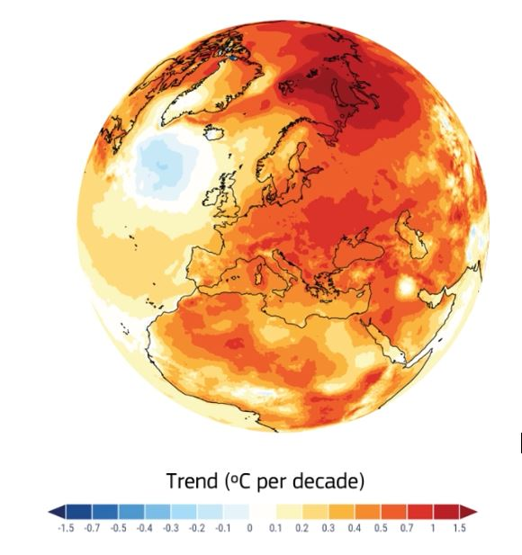

Fa davvero più caldo?
Il cambiamento climatico non esiste!
Il cambiamento climatico esiste ma c’è sempre stato perché è un fenomeno naturale, non dipende dall’attività umana.
Il cambiamento climatico è dovuto all’attività umana ed è pericoloso, dobbiamo agire per limitarlo e limitarne gli effetti.
Per risolvere la questione cominciamo a rivolgerci non a un’altra opinione ma alle osservazioni disponibili.
Copernicus è il programma dell’Unione Europea dedicato all’osservazione del pianeta Terra. Attraverso la flotta di satelliti Sentinel
e una rete di stazioni terrestri monitora in modo continuativo terra, mare e atmosfera del nostro pianeta. I dati raccolti sono disponibili gratuitamente
a chiunque sul sito del programma.
L’immagine all’inizio dell’articolo è una rappresentazione della rapidità di riscaldamento delle diverse zone del pianeta (in °C ogni 10 anni)
(In questo post vogliamo analizzare il riscaldamento globale della Terra utilizzando i dati del catalogo ERA5. Si tratta di un catalogo costruito dall’ente ECMWF (European Centre for Medium-Range Weather Forecasts, cioè Centro Europeo per le Previsioni Metereologiche a Medio Termine) che fornisce dati metereologici in ogni punto della Terra a intervalli di un’ora dal 1940 ad oggi. Questi valori sono ottenuti con una re-analisi dei dati raccolti in stazioni sparse in tutto il mondo, elaborati con gli stessi strumenti utilizzati per le previsioni metereologiche, con il vantaggio ulteriore di avere a disposizione anche l’evoluzione successiva all’istante di interesse in modo da vincolare i valori in modo più affidabile.
I dati del catalogo si trovano al link seguente:
(Accessed on 23-05-2026)
Qui mettiamo a disposizione alcuni file di dati, in formato csv, parzialmente rielaborati e raggruppati, che vi permettono di passare subito alla fase di analisi. In particolare trovate, per quattro punti della Terra (sull’equatore in una pianura del Congo, al centro della pianura Padana, nelle isole Svalbard nel Circolo polare Artico, nell’Oceano Pacifico del Sud) i dati della temperatura all’altezza di due metri rispetto al suolo per i seguenti periodi:
- Ora per ora per tre giorni consecutivi in ogni stagione nel 1940, 1980 e 2020
- Giorno per giorno per due anni consecutivi nel 1940-41, 1982-83 e 2024-25
- Anno per anno dal 1940 al 2025.
Nella tabella seguente in ogni casella si trova un file scaricabile.
Guida all’analisi
Comincia a rappresentare graficamente i dati relativi ai periodi di tre giorni.
- Qual è la forma più comune di questi grafici? Come si può interpretare?
- Sono osservabili differenze relative alla stagione, alla latitudine o al tipo di luogo considerato?
Rappresenta ora graficamente i dati relativi a periodi di due anni. Anche in questo caso chiediti
- Qual è la forma più comune di questi grafici? Come si può interpretare?
- Sono osservabili differenze relative alla latitudine o al tipo di luogo considerato?
Rappresenta infine i dati relativi all’intero periodo.
- Che tipo di andamento si osserva?
- È possibile fare previsioni? Che accuratezza potresti attribuire a queste previsioni?
- Prova a stimare l’andamento delle temperature nell’arco di qualche decennio.
 |
Fa davvero più caldo?
|